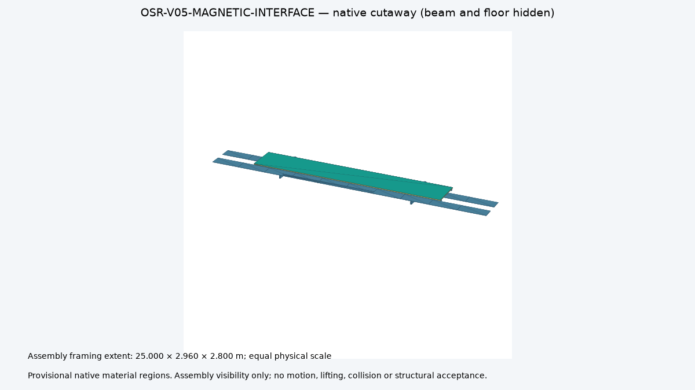
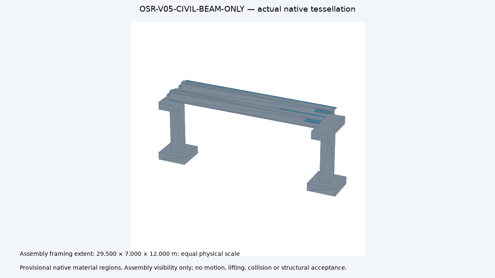
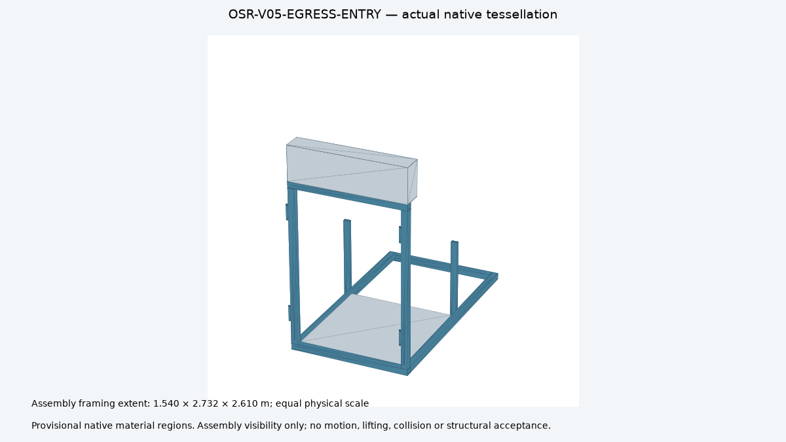
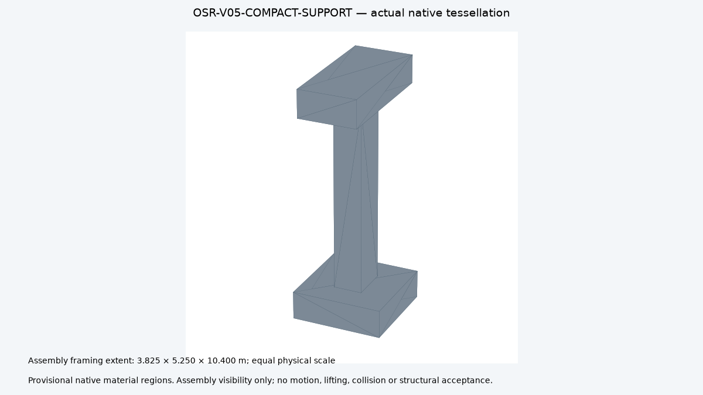

Mechanical and electromagnetic interface
624 native solids; cartridge retention, carrier and magnetic-circuit studies. Full vehicle and production drawings remain open.
OpenSourceRail · v0.5 primary design
Ferrite PM-biased maglev replaces conventional rotating traction motors, wheelsets and gearboxes. Powered linear windings, drives, cooling, sensing and protection remain necessary.
Provisional digital studies. Physical releases: 0. Beam-only guideways and onboard spiral chutes are the preferred research layout; evacuation approval and complete system design remain open.
Loading current maglev catalogue…
USD planning assumptions from current quantities and process routes, without supplier quotations. The subtotal covers repeat fleet and ordinary elevated guideway allowances. Stations, power/charging, factory investment, special crossings, land, assurance, evacuation, financing and other unpriced work remain outside it.
Priority is equipment made in Britain. A UK supplier, distributor or integrator does not establish UK manufacturing origin. The statements below distinguish verified capability claims and configuration-specific origin still to confirm. Prices and process qualification remain open.
Route geography and demand are retained planning inputs. Ordinary at-grade sections are proposed for elevation. Complete installed cost, local-content percentage, land rights and site acceptance remain unresolved.

624 native solids; cartridge retention, carrier and magnetic-circuit studies. Full vehicle and production drawings remain open.

54-solid beam-only bay, reaction iron and support envelopes. No continuous external walkway in this research variant; foundations and evacuation require acceptance.

Partial doorway frame and empty cassette; 20 parts. Fabric, stowage, deployment, attachments and passenger performance remain unqualified.

576 support/load-stage sensitivity cases. Demand estimates guide comparisons; no foundation capacity, installed cost or erection time is accepted.
The report links actual Rust control replays, native-derived guideway coupling, source receipts, STEP/FreeCAD files and five assembly visibility videos. Visibility sequences show assembly order; they are not collision or motion simulations.
./osr build ./osr design check ./osr sim baghdad ./osr book
The restartable build refreshes implemented studies after source changes and stops on failure. It cannot generate missing physical evidence or grant a manufacturing release.